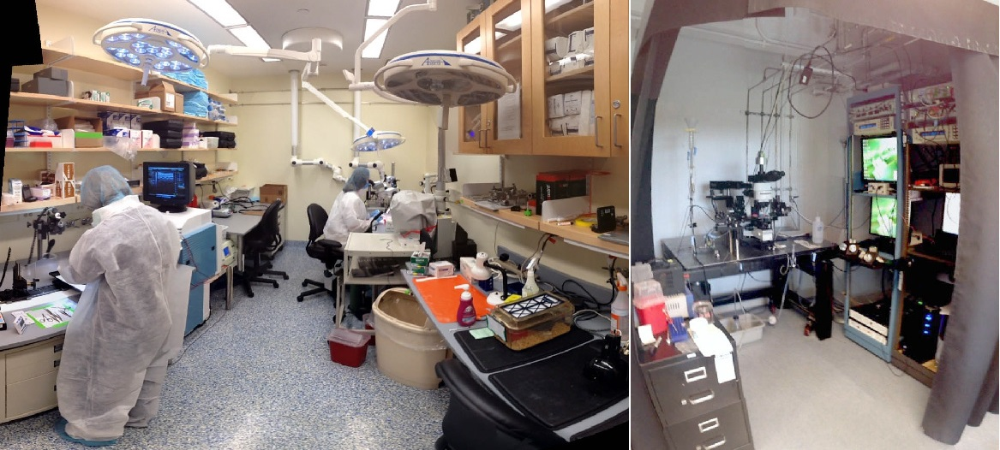
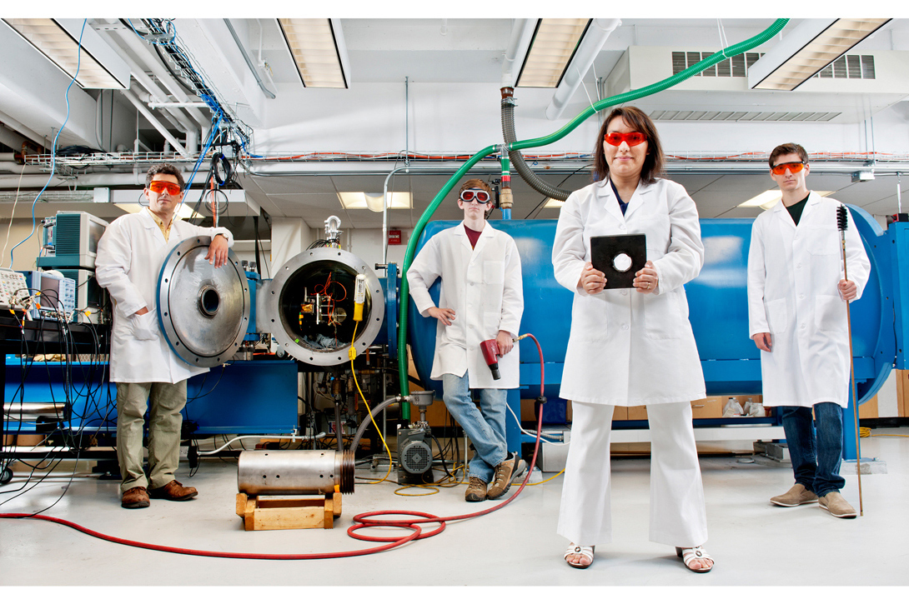

Northvale University of Technology
EXPANDING YOUR FUTURE
LABORATORIES
Launched in November 2011, the Northvale Innovation Lab (I-lab) serves as a resource for students from across Boston interested in entrepreneurship and innovation. The programming offered by the I-lab is designed to help students grow their ventures at any stage of development and covers a wide range of disciplines.
A Connection to Allston, Brighton, and Boston the I-lab fosters collaboration among Northvale students, faculty, entrepreneurs, and members of the Allston and Greater Boston communities. Community members are invited to attend many of the events hosted at the I-lab (listed on our event calendar), to stop at the InnoBreak Café (offering coffee and snacks), and utilize our community lobby open workspace and WiFi. In addition, a number of community partners, including the Small Business Administration, The Service Corps of Retired Executives, The Center for Women and Enterprise, and the Massachusetts Small Business Development Center host events, meetings, and office hours at the I-lab.
The I-lab’s approach differs from that of other entrepreneurship centers in its breadth, operating model, and governance. First, it accepts any student from any Northvale school with any idea, fostering cross-disciplinary, cross-university collaboration. The I-lab resources support student ventures spanning social and cultural entrepreneurship, health and sciences, technology, and consumer fields. Second, it is student centered and faculty enabled, with programming supplied by schools across Northvale to help students take their ideas as far as they can go. Third, the I-lab serves as a new model for university collaboration as it is co-governed by each of the Deans of Northvale and the Provost.

Programming and Resources The I-lab combines foundational learning provided by Northvale faculty who teach innovation and entrepreneurship with resources for students to apply to their ideas and help them grow. Programming at the I-lab is based on the pedagogy developed with Professor George Whitesides, the Woodford L. and Ann A. Flowers University Professor, which follows a four-part approach:
- Foundational learning (courses and online video)
- Expert resources (workshops and one-on-one appointments with lawyers and entrepreneurs)
- Experiential learning experiences (challenges, winter break trips, and startup weekends)
- Venture Incubation Program (incubation, mentoring, private workshops, communitybuilding events)
The I-lab operates as a startup within the larger university environment. With student and community interest and activity in its first two years exceeding all expectations, the I-lab is experiencing rapid growth. The opportunities for cross-disciplinary collaboration embodied in the I-lab represent the potential to catalyze innovative solutions to many of society’s most important challenges.
The I-lab consists of nearly 30,000 square feet of space, with more than 250 workstations, 24 conference rooms, most with projection capability, a workshop/prototyping room, a next-generation classroom, video conference suite, treadmill desk, and stocked kitchen.
